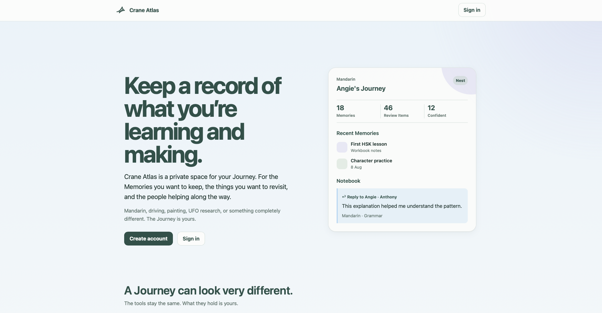
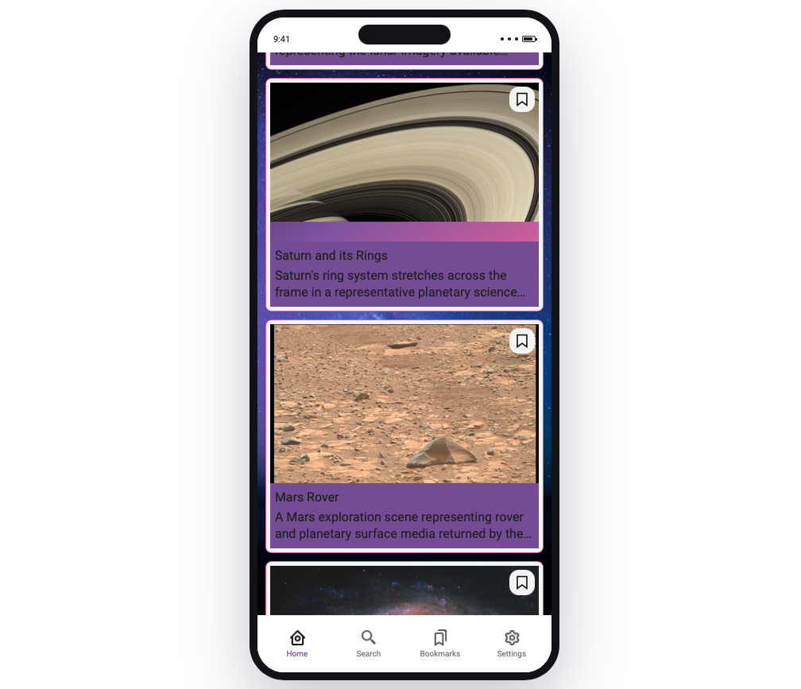
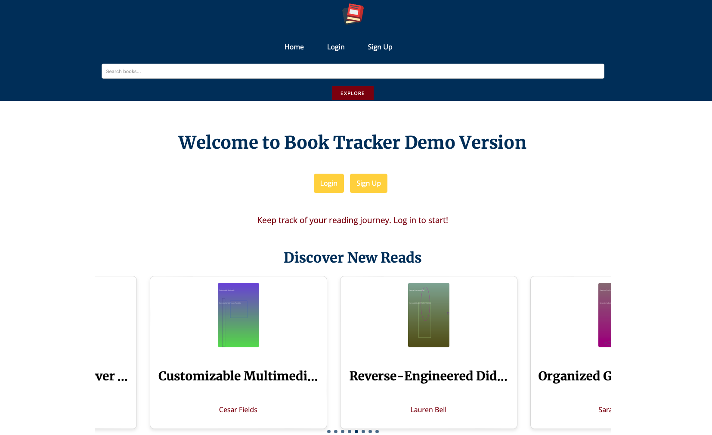
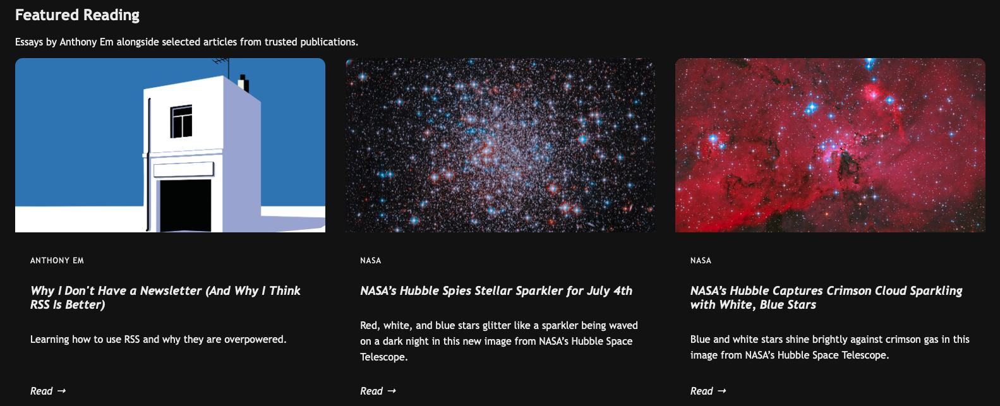
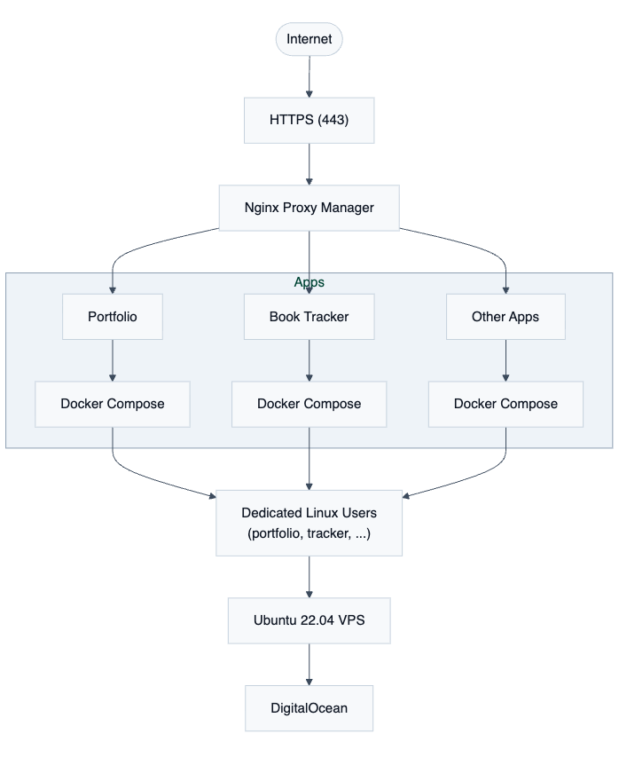
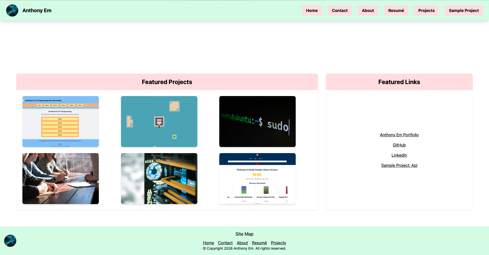
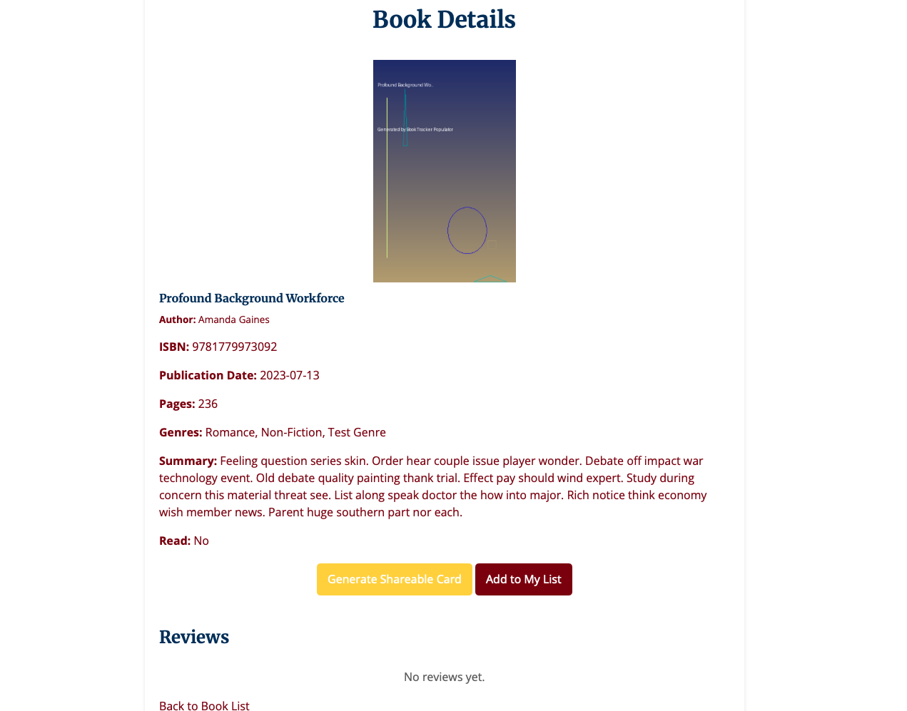
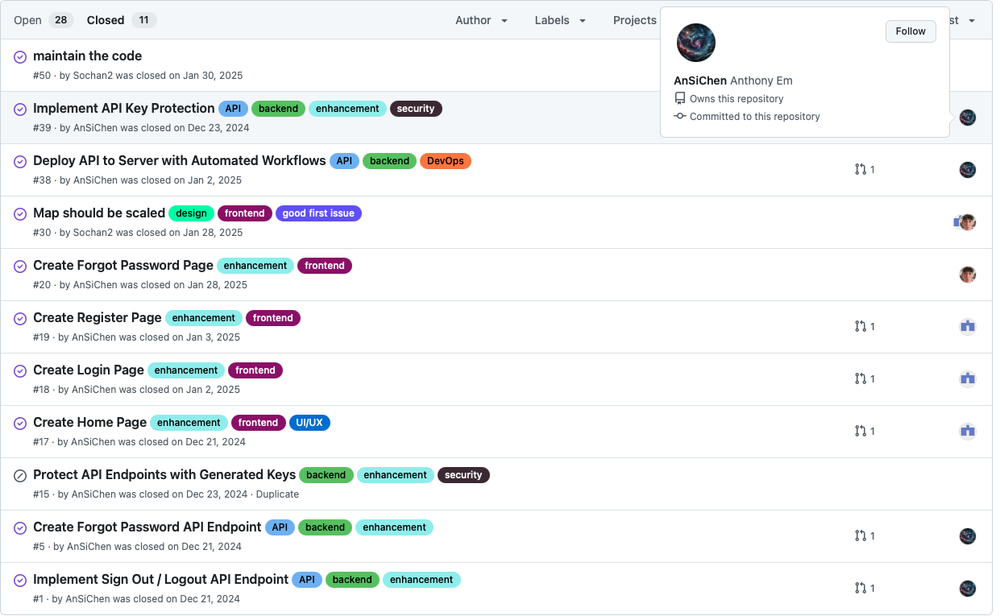
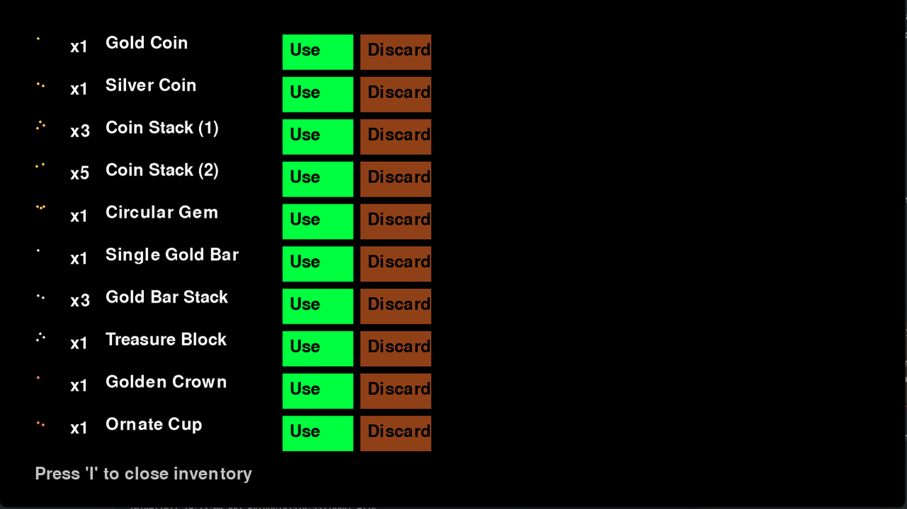

Crane Atlas
A private place for preserving learning journeys, shared history, lightweight review material, and trusted collaboration inside small Nests.
- Python
- Flask
- SQLite
- Jinja
- JavaScript
- Docker
Software, web, and infrastructure projects.

A private place for preserving learning journeys, shared history, lightweight review material, and trusted collaboration inside small Nests.




The Linux-based infrastructure that powered my portfolio projects, using Docker, Docker Compose, GitHub Actions, and Nginx to automate deployments and host multiple applications.



A collaborative web application that helps users discover nearby attractions using GPS, interactive maps, and category-based filtering. My contributions focused on backend, infrastructure, and DevOps.

Contributed an inventory system to the open-source Pyceas project, implementing item management features and collaborating on gameplay and GUI improvements.
By Anthony Em and a small static shelf of curious reads.

Anthony Em
A retrospective on building Crane Atlas from a private learning-journal idea into a full Flask application, and why the hosted version was ultimately retired while the core concept survived.
Read →
Anthony Em
A self-hosted deployment platform for hosting and maintaining multiple containerized applications on a Linux VPS using Docker, Docker Compose, GitHub Actions, SSH, and a reverse proxy with automated HTTPS.
Read →
Science • Quanta
A mathematical result connecting fractal structure, chaos, and quantum ideas through a new uncertainty principle.
Read →